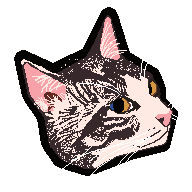
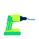

Vanderal Talagi



26/04/2026 #2
Today I did quite a few things other than go on my phone. I started my day reading instead of going on my phone; did a terrible job whacking the hedges; did the laundry; went for a walk with my sister; made burritos in a way I had not done before (link here); and put a hook onto the back of the bathroom door for Erika, my fiance, to put her clothes on.
I even created the picture of my cat Montie which is bobbing beneath the header of this page.
I feel so much more fulfilled having used up my time in such a way. I even learned some things too, like the fact that I will need to hire a professional to do the hedges and that the door to our bathroom is hollow.
I don’t know how often I will update this page, but at least for now the motivation has not waned.

25/04/2026 #1
I’ve been thinking a lot recently about just how much time I have been spending on my phone. The amount of time I spend consuming absolute rubbish instagram, reddit and youtube content without creating anything. This has been a struggle of mine for a very long time.
Additionally I find myself having bursts of inspiration, much like this one, where I create something… but then more often than not never keep going.
I revisited some of my old projects, from the previous website design I made, videos of me singing, to the youtube videos I had filmed and realised things could’ve been different.
If I had worked on these or various other skills, instead of spending hours on social media sites like a zombie, I could have gotten a lot more out of this lifetime.
I want to change this though, I want to be a renaissance man, a well rounded individual with a strong ability to learn and with a skill set that makes me uniquely qualified to tackle different tasks.
When I eventually have kids, I want to be a good role model and not use screens so that they aren’t afflicted by the current brain drain that devices create; I want to be healthy and fit so that the DNA I pass on is healthy; and I want to have practical skills, including the ability to learn hard things, to be able to pass on.
How am I going to do this… I’m not sure yet, this is another one of those bursts of inspiration… that’s the next step. Though this web page will be one of the places where I will make changes and start creating, as well as where I will document progress.
This is a start.